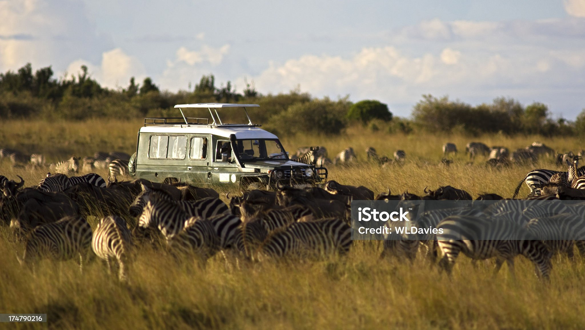

Biodiversity is essential for a balanced ecosystem, but deforestation, pollution, and climate change are causing species extinction at an alarming rate. Protecting wildlife and restoring habitats is crucial for a sustainable future.
🌍 What Causes Biodiversity Loss?
- Deforestation: Clearing forests for agriculture and urbanization destroys habitats.
- Pollution: Plastic waste, chemicals, and oil spills harm wildlife.
- Climate Change: Rising temperatures and extreme weather disrupt ecosystems.
- Overexploitation: Overfishing, poaching, and illegal wildlife trade endanger species.
⚠️ Why Does It Matter?
When species disappear, ecosystems become unstable. Over 1 million species are at risk of extinction due to human activity.
"Biodiversity is the foundation of ecosystem services vital for human survival." – UN Report
✅ How Can We Protect Biodiversity?
- Reforestation: Planting trees to restore lost habitats (e.g., The Great Green Wall).
- Marine Conservation: Protecting coral reefs and reducing plastic waste.
- Wildlife Protection Laws: Enforcing anti-poaching laws and creating nature reserves.
- Reducing Carbon Footprint: Sustainable agriculture and eco-friendly practices.
🌱 How You Can Help
Join conservation efforts by supporting wildlife protection, reducing waste, and spreading awareness.
Take Action